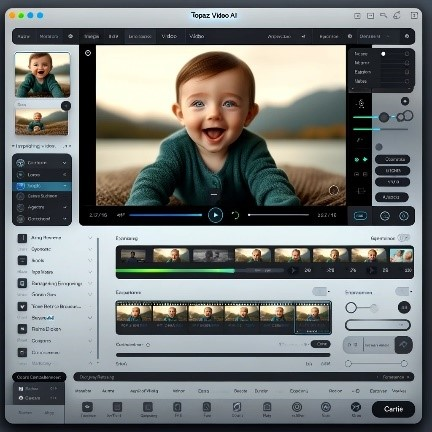

Key AI Tools for Video
Adobe Premiere Pro:
https://www.adobe.com/products/
Adobe Premiere Pro is a leading video editing software used by professionals worldwide. It's part of
Adobe Creative Cloud, offering
robust editing tools for creating visually stunning videos and films. Its user-friendly interface allows
for efficient workflow, including multi-camera editing, VR editing, and advanced color grading. Premiere
Pro supports a wide range of file formats, ensuring compatibility with various types of media. The
software's regular updates keep it at the forefront of video editing technology. Its collaborative
features, like team projects and shared projects, facilitate teamwork in post-production, making it a
top choice for filmmakers, broadcasters, and content creators.
Special Features of Adobe Premiere Pro include:
Multi-Camera Editing: This feature allows editors to seamlessly switch between
multiple camera angles in real-time, making it ideal for editing live events or interviews.
Lumetri Color Tools: These advanced color grading tools enable precise color
correction and creative color effects, offering extensive control over the look and feel of the
footage.
VR Editing: Premiere Pro supports virtual reality video editing, providing tools
to
edit immersive VR content with options for adjusting the field of view and monitor the effects in
real-time.
Versatile Video Editing: Offers a wide range of editing tools for cutting,
trimming,
and arranging video clips with precision.
Dynamic Link with After Effects: Seamless integration with After Effects for
advanced
motion graphics and visual effects.
Lumetri Color Tools: Provides advanced color grading options to enhance visual
storytelling.
Motion Graphics Templates: These templates, integrated from Adobe After Effects,
offer
customizable animations and graphics, streamlining the creation of visually appealing titles and
graphics in videos.
These features make Adobe Premiere Pro a versatile and powerful tool for a wide range of video editing
needs.

Topaz Video AI:
https://www.topazlabs.com/topaz-video-ai
Topaz Video AI is a cutting-edge video enhancement software designed to upscale, denoise, and sharpen
video footage using advanced artificial intelligence. It is highly praised for its ability to transform
low-resolution videos into high-quality outputs with minimal effort. The software stands out for its
user-friendly interface and efficient processing, making it a favorite among both amateurs and
professionals in video editing.
This software excels in revitalizing old or poor-quality videos, offering a blend of simplicity and
powerful AI-driven tools. It's particularly popular for its ability to automate complex editing tasks
while maintaining high-quality standards, making it a valuable tool in the realm of video restoration
and enhancement.
Key features of Topaz Video AI include:
Video Upscaling: Enhances video resolution effectively, turning SD into HD and HD
into
4K or even 8K.
Motion-Consistent DeNoise and DeReverb: Removes unwanted noise and reverb without
affecting the video's natural dynamics.
AI-Powered Sharpening: Sharpens and clarifies video details, enhancing textures
without introducing artifacts.
Batch Processing: Allows for efficient processing of multiple videos
simultaneously,saving time and effort.
Filmora:
https://filmora.wondershare.net/filmora-video-editor.html
Filmora is a widely-used video editing software, appreciated for its intuitive interface and array of
creative tools. It's designed for both beginners and intermediate users, offering a balance between
functionality and ease of use. Filmora simplifies the video editing process, making it accessible for
hobbyists and content creators alike.
The software particularly popular among YouTubers and social media enthusiasts for its user-friendly
design and quick learning curve. Filmora enables users to create professional-looking videos with
minimal effort.
Key features of Filmora include:
Intuitive User Interface: Easy-to-use for beginners, yet powerful enough for
advanced
users.
Rich Library of Effects and Transitions: Extensive collection of built-in effects,
filters, and transitions.
Advanced Editing Tools: Features like motion tracking, keyframing, and 4K editing
capabilities.
Cross-Platform Compatibility: Available on both Windows and Mac, offering
versatility
in editing environments.
Wide Range of Effects and Transitions: Includes a vast library of filters, graphic
overlays, and transitions.
Veed.io:
https://www.veed.io/
Veed.io is a cloud-based video editing platform known for its simplicity and effectiveness, catering to
content creators and businesses alike. It provides tools for quick editing, subtitling, and sharing
videos online. Its intuitive interface and streamlined processes make video editing accessible, even for
those with minimal editing experience.
The platform emphasizes collaboration and efficiency, offering features like team sharing and brand kit
integration. Veed.io stands out for its focus on social media content, offering tools tailored for
optimizing videos for various platforms.
Key features of Veed.io include:
Cloud-Based Editing: Access and edit videos from any device with an internet
connection.
Automated Subtitles: Automatic transcription and subtitle generation for videos.
Social Media Optimization: Tools specifically designed for creating content for
social
media platforms.
Collaborative Tools: Features for team collaboration and brand consistency across
projects.